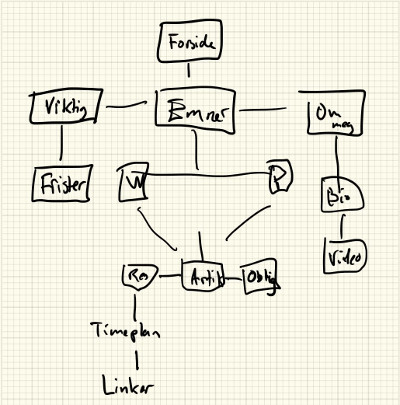
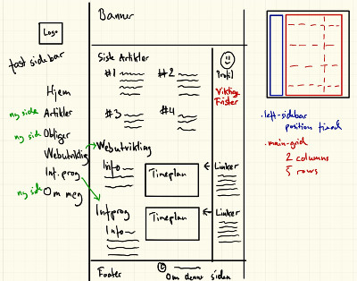
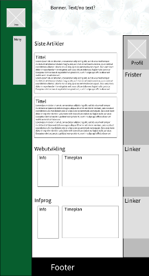

Om denne siden
Etter å ha lest igjennom oppgaveteksten hadde jeg følgende spørsmål jeg måtte besvare før jeg kunne planlegge videre:
- Skal nettstedet inneholde mer enn det oppgaven ber om?
- Skal nettstedet være kun for eget bruk, eller skal det vises og brukes for andre?
Begge spørsmålene er vesentlige for planleggingsfasen. Det første var enkelt å bestemme seg for, da jeg tenkte at jeg burde gi plass til flere studieressurser enn bare webutvikling når jeg først er i gang med å lage et slikt nettsted. Så jeg bestemte meg for å inkludere infProg inn i nettstedet.
Det andre spørsmålet er litt vanskeligere. En ting er at oppgaven skal besøkes og vurderes av medstudenter og lærere - det er i grunn en kunstig situasjon. Hvis målet er å lage et personlig ressursarkiv for meg selv uten å forvente noe annen trafikk, så ville jeg ikke trenge noe fancy eller pent. Bare all informasjonen jeg trenger ganske lett tilgjengelig.
Likevel så jeg et potensiale i dette prosjektet med nytteverdi utover den obligatoriske oppgaven. Jeg tenkte dette kunne være rammeverket for en portefølje, et nettsted der jeg kunne vist fram hva jeg har jobbet med. Da ville det være naturlig å legge mer flid inn i presentasjonsbiten, og i tillegg ha med noe mer personlig informasjon i form av en "om meg" side.
Etter å ha "visjonen" klar begynte jeg arbeidet med å skissere ned en "sitemap", en oversikt av hvilke deler nettstedet består av og hvordan de henger sammen hierarkisk. Jeg søkte etter andre personlige nettsteder for inspirasjon, både for struktur og design. Jeg gjorde noen grove skisser med utgangspunkt i en horisontal navigeringsmeny, og tenkte en stund på å gå den veien. Likevel valgte jeg til slutt å gå for en fixed-sidebar meny. Jeg hadde lagd sider med horisontal navigering og max-width, en-kolonnes, midtstilt design tidligere og ønsket å prøve noe nytt denne gangen. Jeg fant også flere sider på nett som jeg syns brukte dette på en fin måte.
Den endelige skissen var i konseptet et design med tre kolonner. En fast-plassert meny, en hovedkolonne med de nyeste prosjektene (flexbox-rubrikker var planen), og en høyre kolonne med "supplement" i form av en liten profil av meg selv (med link til full profilside), og en seksjon med de viktigste fristene. De viktige fristene er jo viktige så jeg ville ha de synlig tidlig i forsiden, kanskje med den mest nærliggende fristen i rødt. Tanken var så at ressurser som timeplaner og linker osv. kunne få sine egne sider. Dette var utgangspunktet jeg tok når jeg satt meg ned for å kode. Jeg bestemte meg også for å bruke CSS Grid som rammeverket til layout.
Jeg ble gjort oppmerksom på at oppgaveteksten ba om at ressurser o.l skulle være på forsiden. Jeg fant ut at med CSS Grid var det ikke noe stort problem å legge til flere rader, og jeg syns det ble naturlig at informasjon om fagene falt i hovedkollonnen, mens linkearkivene kunne ligge i høyre sidefelt. Navigasjonsmenyer ble revidert etter denne beslutningen.
Etter obligen er levert og bedømt er det mulig jeg vil gjøre noen endringer, men jeg føler at dette designet per dags dato oppfyller oppgavekravene, og samtidig kan ekspanderes til et nettsted som kan leve i ettertid.